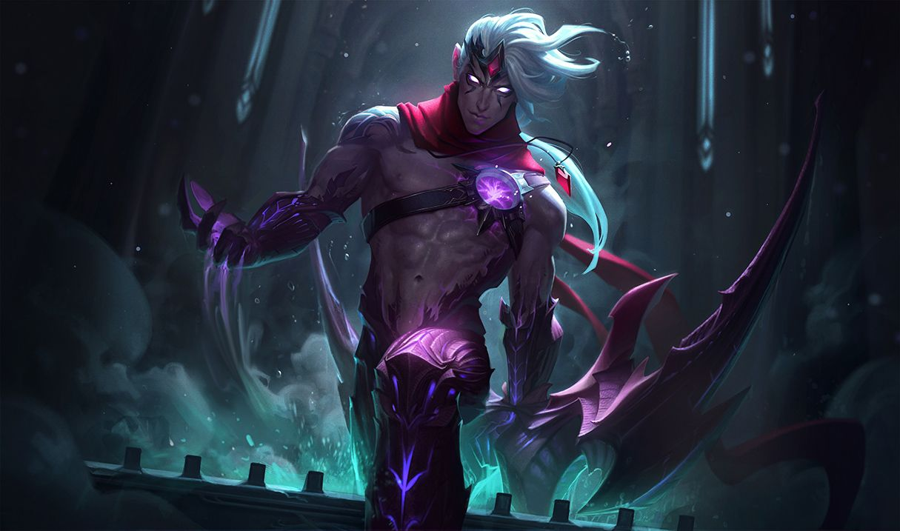

바루스
바루스
바루스, 응징의 화살
Varus, the Arrow of Retribution

1. 배경
2. 스킬
2.1. 패시브 - 죽지 않는 복수심(Living Vengeance)
2.2. Q - 꿰뚫는 화살(Piercing Arrow)
발사 시: 바루스가 화살을 발사하여 물리 피해를 입힙니다. 관통당한 적 하나당 15%씩 피해량이 감소합니다. (최소 33%) 피해량과 역병 폭발 효과는 충전 시간에 비례해 최대 50%까지 증가합니다.
2.3. W - 역병 화살(Blighted Quiver)
바루스가 다른 스킬을 사용해 역병 중첩을 폭발시키면 중첩 횟수당 최대 체력에 비례한 마법 피해를 입힙니다. 챔피언과 에픽 몬스터를 대상으로 역병을 폭발시키면 기본 스킬의 재사용 대기시간이 중첩 횟수당 최대 재사용 대기시간의 12%만큼 감소합니다.
정글 몬스터에게 최대 360의 피해를 입힙니다.
사용 시: 다음 꿰뚫는 화살 스킬이 잃은 체력에 해당하는 마법 피해를 추가로 입힙니다.[10] 피해량은 충전 시간에 비례하여 150%까지 증가합니다.
2.4. E - 퍼붓는 화살(Hail of Arrows)
2.4. R - 부패의 사슬(Chain of Corruption)
촉수는 대상으로부터 감염되지 않은 적 챔피언에게 뻗어 나가, 닿은 적에게 동일한 양의 피해를 입히고 롤아이콘-군중제어 속박속박합니다.
3. 장점
매우 강력한 라인전
바루스는 어느 라인을 서고 어떤 빌드를 타든 라인전이 강하기로 유명하다. 최초로 바루스가 주목받았던 계기도 라인전이 강하기 때문이었다. 원거리 딜러 중에서도 상위권에 속하는 기본 공격 사거리로 역병 화살(W)까지 붙여가며 준수한 평짤을 넣을 수 있고, 기본 스킬 중 무려 2개가 AD 계수를 받는 광역 물리 피해 스킬이라서 라인 클리어, 견제, 전투 모두 흠잡을 구석이 없다. 심지어 준수한 CC기까지 있어 혼자 혹은 아군과 연계해서 킬각을 잡기도 쉬운 편이다궁극기의 뛰어난 변수 창출 능력
예상하기 어려운 킬 캐치 능력
역병 화살(W) 활성화 시 꿰뚫는 화살(Q)에 잃은 체력 비례 피해가 추가되고, 단순히 역병 화살 3스택을 터뜨려 발생하는 체력 비례 피해도 만만찮기 때문에 바루스를 상대하는 입장에서 이게 죽나 싶은 딜에 갑자기 회색 화면이 뜨는 장면이 많이나온다. 이는 챔피언뿐만 아니라 오브젝트에도 적용되는 사항이며 바루스를 상대할 땐 예측불허한 막타딜을 항상 의식해야 한다.막강한 탱커 처리 능력(AP 빌드)
최상급 대치전 능력 (관통력 빌드)
4. 단점
한타에서의 어려운 포지셔닝
다재다능한 바루스지만, 바루스는 이동기가 없기 때문에 한타 포지셔닝 설계의 많은 부분을 카이팅으로 해결하거나 아군 스킬로 보조해줘야 한다. 이는 바루스의 숙련을 어렵게 하는 부분으로 작용한다.까다로운 조건을 요구하는 화력 (DPS 빌드)
원거리 딜러 최악의 DPS (관통력 빌드)

저작물은 CC BY-NC-SA 2.0 KR에 따라 이용할 수 있습니다. (단, 라이선스가 명시된 일부 문서 및 삽화 제외)